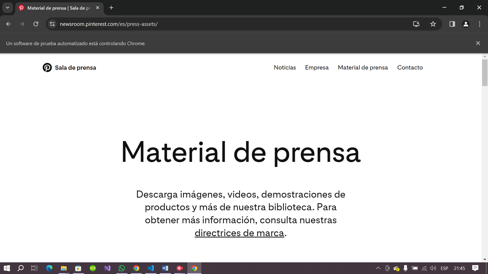
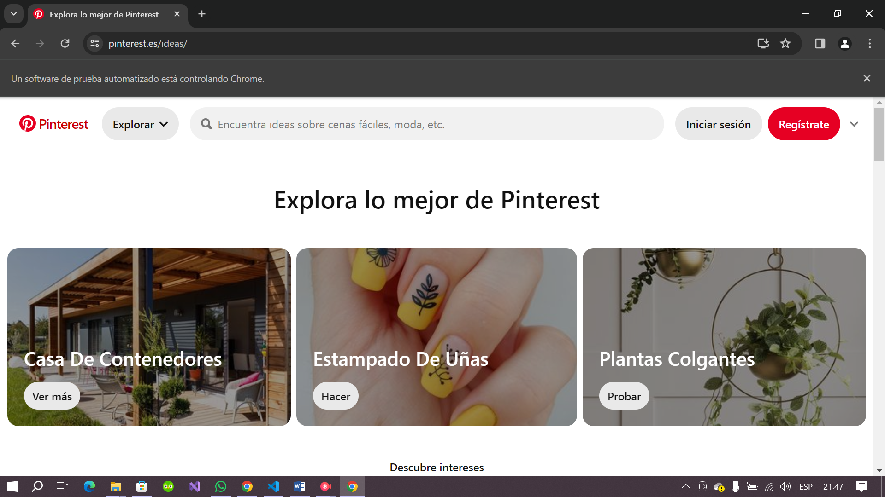
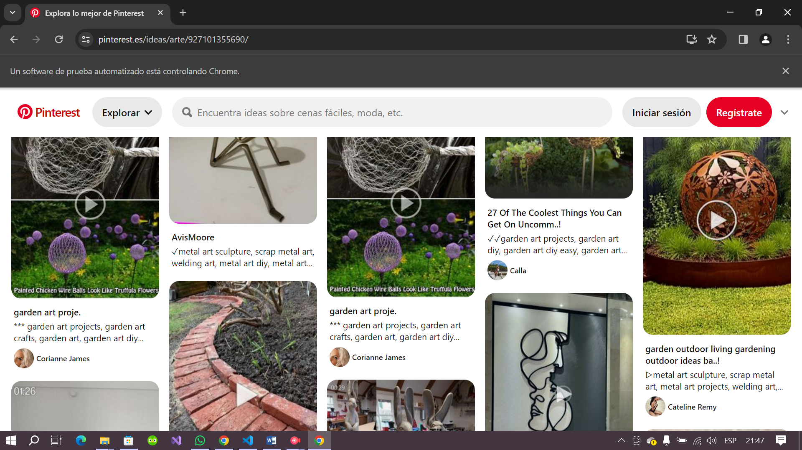

Imagenes de las pruebas
Prueba automatizada de Crear una cuenta para empresas


Prueba automatizada de Iniciar sesión en Pinterest
Prueba automatizada de Ver la galería de Pinterest

Prueba automatizada de Conocer el equipo de Pinterest
Prueba automatizada de Explorar lo mejor de Pinterest

